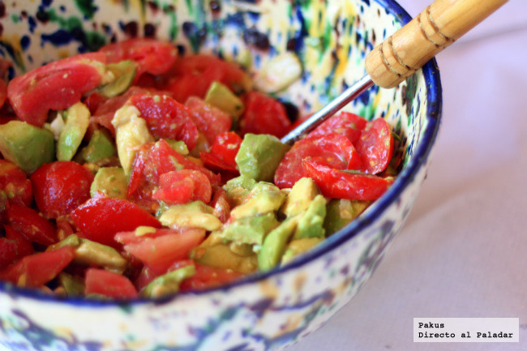

Ensalada De Aguacate

Descripción
Preparacion un deliciosa ensalada de Agucate para acompañar cualquier almuerzo, se pueden agregar ingredientes como huevos o piña a esta preparacion.
la receta que se indica en esta pagina web es propia y no es obligatorio seguirla al pie de la letra, si quiere cambiar algo, añadir un ingrediente o quitar algo que no le guste, puede hacerlo y probar que tal quedó.
Ingredientes
- Cebolla cabezona
- Limon
- Tomate
- Aguacate
- Cilantro
Preparacion
- picar la cebolla y el tomate en cuadritos pequeños, lavar la cebolla y pringarla con limon antes de agregarla al tomate
- picar el aguacate tambien en cuadros pequeños, despues agregarlo a la cebolla y tomate
- picar cilantro y agregarlo a la ensalada, con un poco de aceite de oliva.